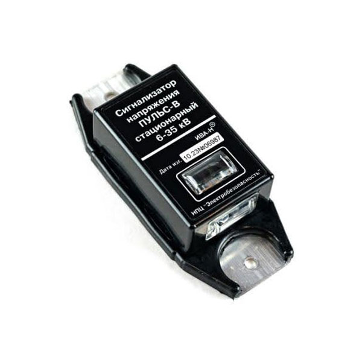
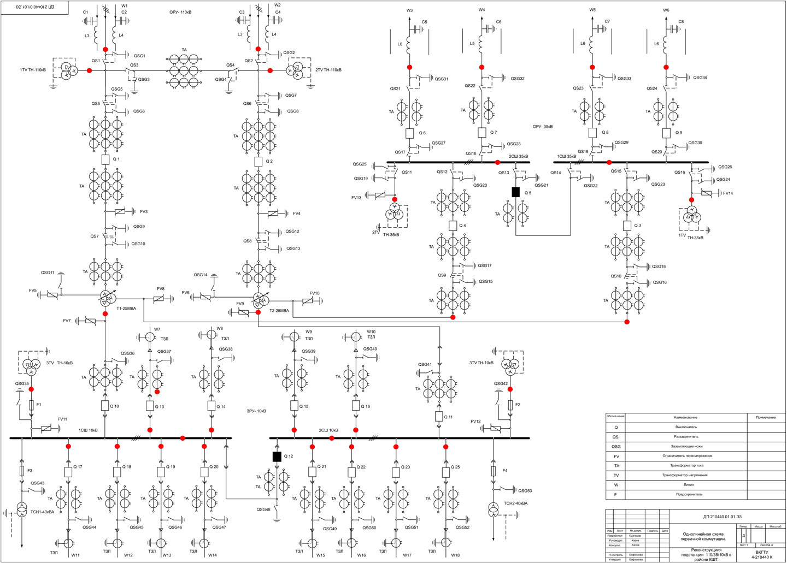

Сигнализатор напряжения стационарный "Пульс-В"
Сигнализаторы напряжения стационарные (далее - СНС) «Пульс-В» предназначены для предупреждения персонала о наличии напряжения на токоведущих шинах распредустройств воздушных линий электропередачи (ВЛ) напряжением 6-35 кВ пульсирующими световыми сигналами. Они питаются от энергии электрического поля воздушных ЛЭП напряжением 6 кВ и выше, и, поэтому им не нужны элементы питания.
Отсутствие сменных элементов питания, а также использование материалов и деталей, способных длительное время функционировать в широком температурном диапазоне (–45 до +60 С), позволяет устанавливать «Пульс-В» непосредственно на токоведущие части на многолетний срок. Конструкция неразборная, пыле- и влагозащищенная (IP 54).
При наличии напряжения сигнализаторы «Пульс-В» формируют импульсные световые сигналы. Яркость сигналов СНС постоянна, а их периодичность зависит как от напряжения ВЛ, так и от расстояний до других шин и заземленных частей электроустановки. СНС «Пульс-В» не требуют ни настройки при монтаже, ни обслуживания во время эксплуатации. Сигнализаторы обеспечивают надежное распознавание пульсирующего светового сигнала о наличии напряжения. В СНС «Пульс-В» световая индикация осуществляется по двум перпендикулярным направлениям.
Порядок применения и характеристики сигнализатора "Пульс-В" смотрите в Каталоге продукции В форме Запрос возможно уточнить цену, сроки изготовления, запросить коммерческое предложение, документы или задать вопрос.
Выпускаются два типа стационарных сигнализаторов
1. СНС «Пульс-Н» для наружной установки на провода ЛЭП (например, между разъединителем и КТП). СНС «Пульс-Н» разработан для установки непосредственно на провода ВЛ или в местах их крепления к проходным изоляторам трансформаторных подстанций.
2. СНС «Пульс-В» для внутренней установки на токоведущие шины КРУ.
Рекомендуемые места установки СНС "Пульс-В"
На подстанции:
- линейные ячейки КРУ(Н);
- кабельный отсек ячейки КРУ(Н) в месте присоединения кабельной линии;
- ячейки трансформаторов напряжения (сборные шины).
Рекомендуемые места размещения СНС «Пульс» отмеченные красными точками, в ОРУ 35/110 кВ и на ТП 6-10/0,4 кВ приведены на фото

Достоинства
- Срок службы – не менее 25 лет.
- Простое крепление к токоведущим частям
- Питание энергией емкостных токов утечки
- Не требуют настройки, технического обслуживания (только внешний осмотр)
- Обеспечивают надежное распознавание пульсирующего светового сигнала о наличии напряжения

Сертификация и гарантия
Изделие сертифицировано
Разработан и изготавливается Научно-производственным центром "Электробезопасность", г. Киров.
Поставка и организация технического обслуживания осуществляется ООО "Электробезопасность-Вятка".
Гарантийный срок эксплуатации – 3 года со дня отгрузки с предприятия-изготовителя.
Здесь вы можете узнать об обслуживании нашей продукции
Подробнее